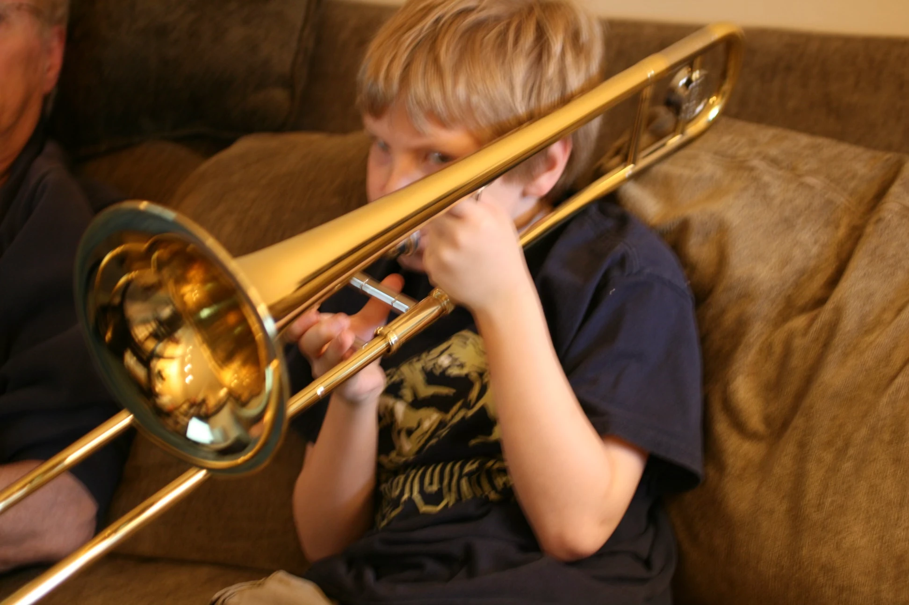

My Things and Where They Come From.
 I grew up playing jazz trombone throughout middle and high school, eventually catching the electronic music bug and finding myself working in FL Studio. After realizing what a mistake of software that is, I moved myself over to Ableton. I would describe my musical influences as jazzy, noisy, bleepy, and bloopy. I’ve made things ranging from soft soothing lo-fi hip-hop to repugnant noisey wall-of-sound.
Currently, I’m fond of odd analog sound machines - instrument creators currently inspiring me include: Lorre Mill, Ciat Lonbarde, and the general 4U Modular scene.
I’m not as active in making and releasing music these days. You’ll find most of my music released on the platforms listed below.
Most of my music is accessible (begrudgingly) via Spotify.
You can also find me on Apple Music, Tidal, and other major streaming platforms.
A small body of my work is available on Bandcamp